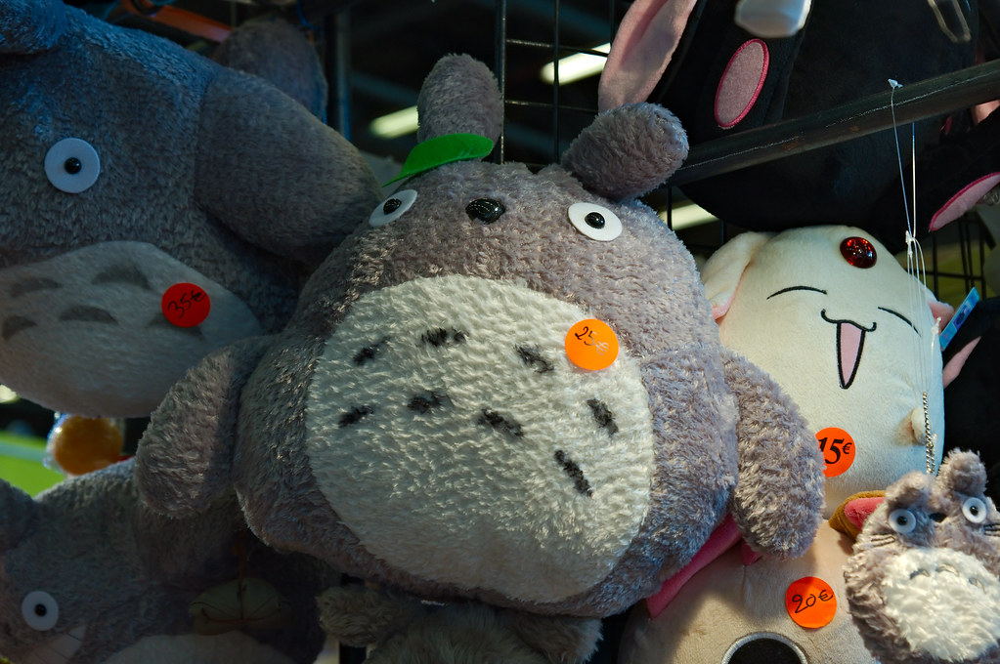

Bienvenidos a nuestra sección cinematrográfica aqui les hablaremos todo lo que necesitan saber sí desean llevar nuestro curso.
Para los fans del anime,no hay nada como las obras de arte del Studio Ghibli,este pequeño equipo de animadores que ha revolucionado los corazones de muchos fanáticos dedicó años a elaborar cada maravillosa historia ,dando vida a cada relato que fueron sacando no importaba el tema que hicieran cada uno tiene una parte muy significativa en los corazones de muchísimas personas tales obras como:Mi vecino Totoro,Ponyo,El castillo ambulante y la tumba de las luciérnagas.Son muy importantes para la industria del entretenimiento casi el 50% de las personas que visualizan anime las han visto y conocido ya .
El estudio se ha caracterizado por ser una gran promotor en la industria de la animación dando vida a maravillosas escenas de comida,paisajes , personajes y su música.
Este video esta inspirado en la película de studio ghibil :Howl's moving castle
Precio Actual:2000 colones
Te llevas gratis un peluchito de totoro gordito para que te acompañe a ver tu peli con todo el estilo Ghibil
Precio actual:1000
Precio actual:1000